A & G
inserisci la password
Password errata. Riprova!
3 · luglio · 2027
Benvenuti nel sito del nostro matrimonio.
Scorri per scoprire tutti i dettagli.
in 15 scatti, scorri a destra per vederli
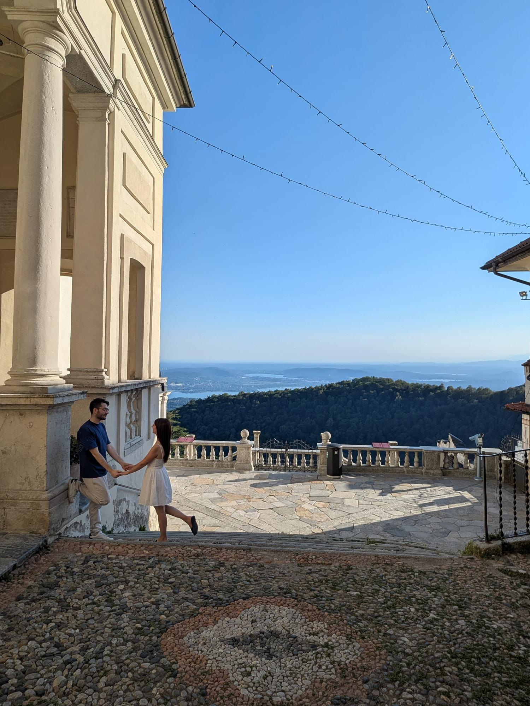
Il Sacro Monte, dove ci sposeremo ⛪
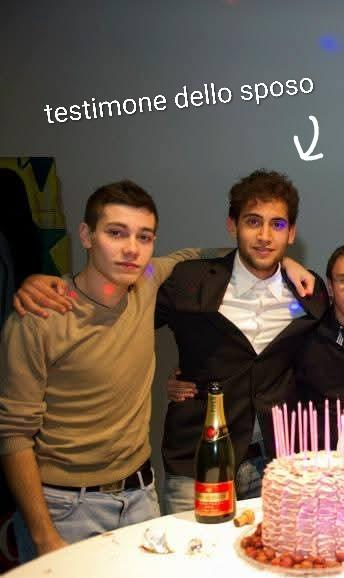
Il testimone dello sposo, da una vita 🤍
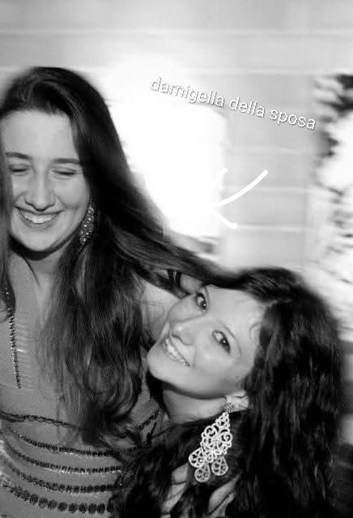
La damigella della sposa, da sempre 💐
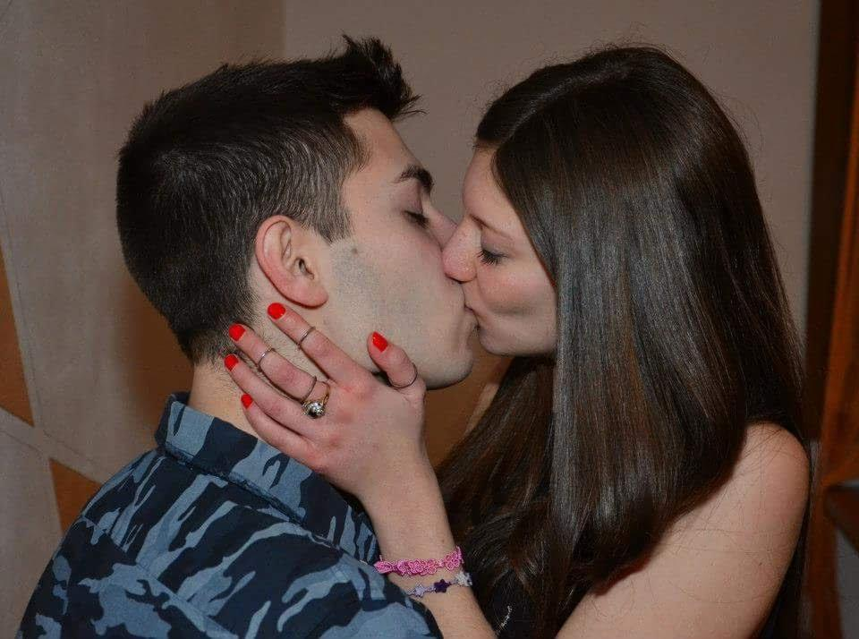
I primi baci a capodanno 🎆
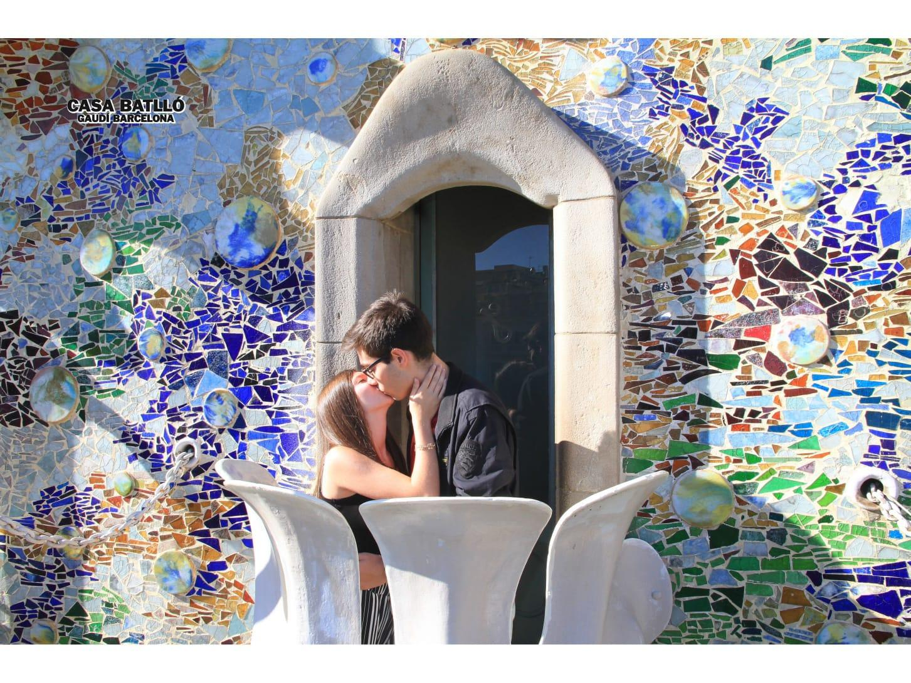
Primo viaggio a Barcellona ✈️
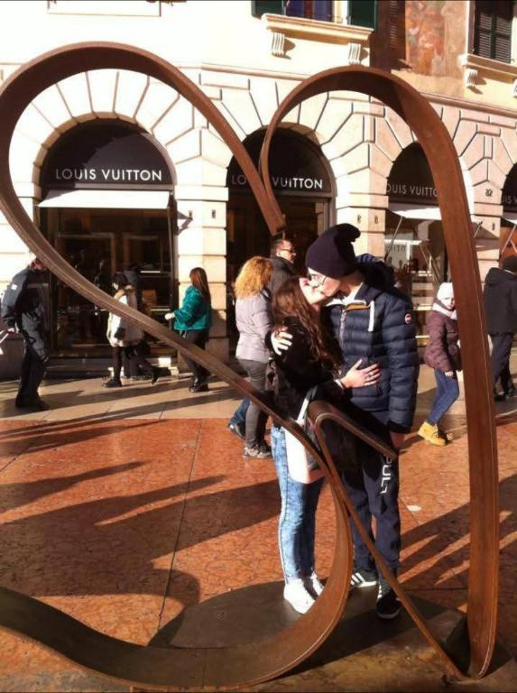
Verona, dove il nostro cuore ha preso forma 💗
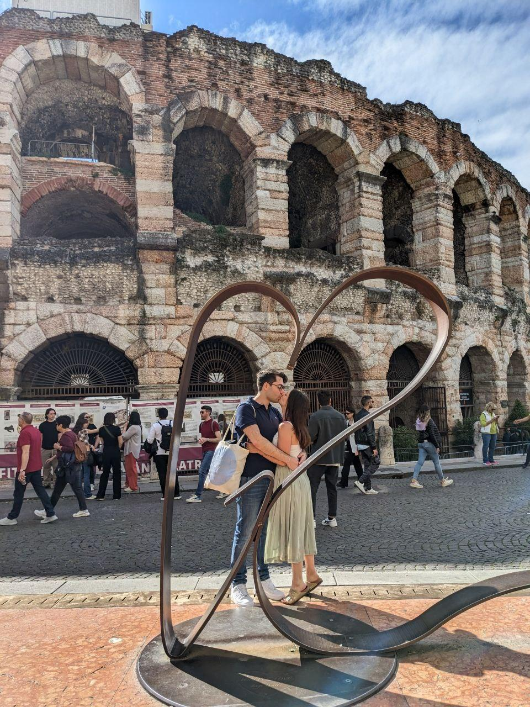
Lo stesso cuore, la stessa Verona, ancora noi 💕
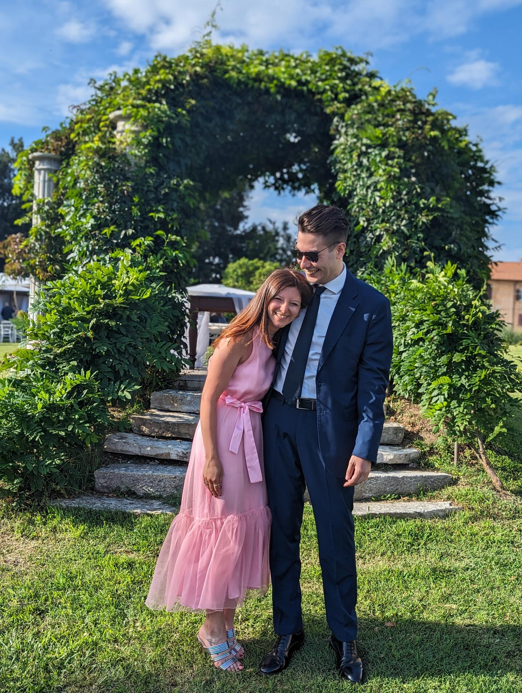
Ridere sempre insieme ❤️
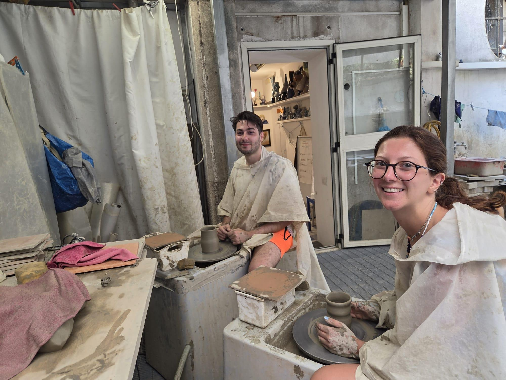
Nuove passioni, un tornio alla volta 🏺
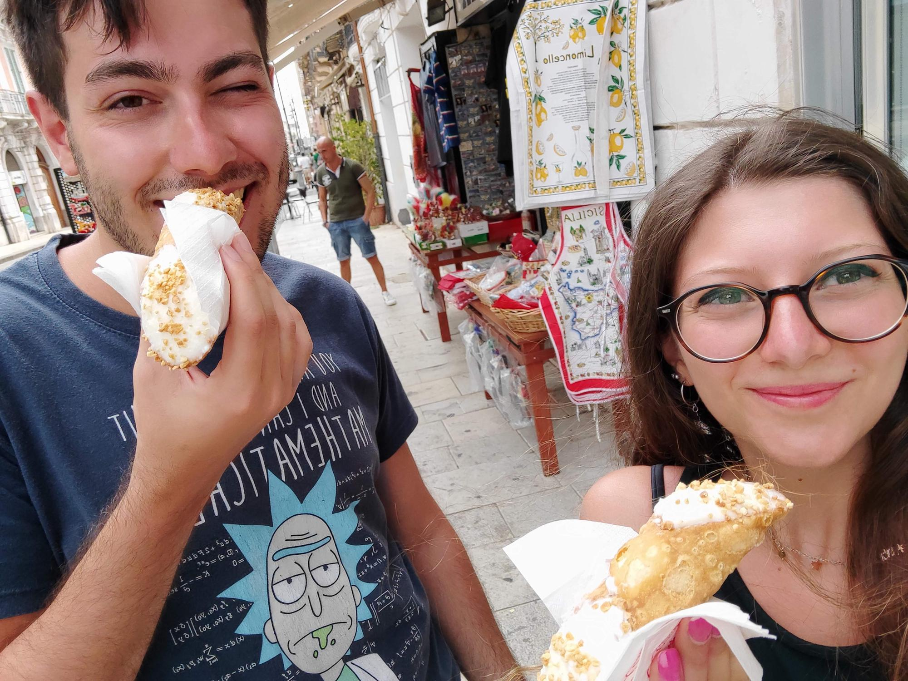
La Sicilia, i cannoli, e la nostra vera passione: mangiare 🍮
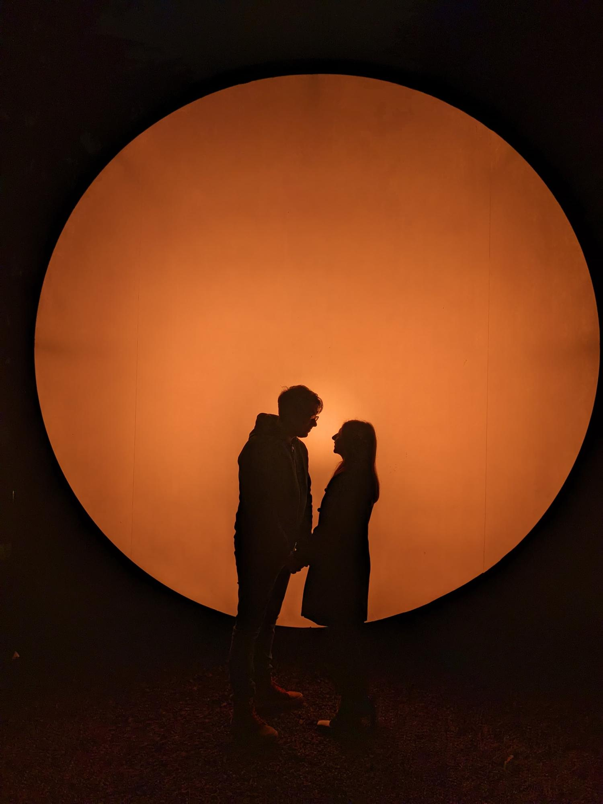
Due sagome, una sola luce ✨
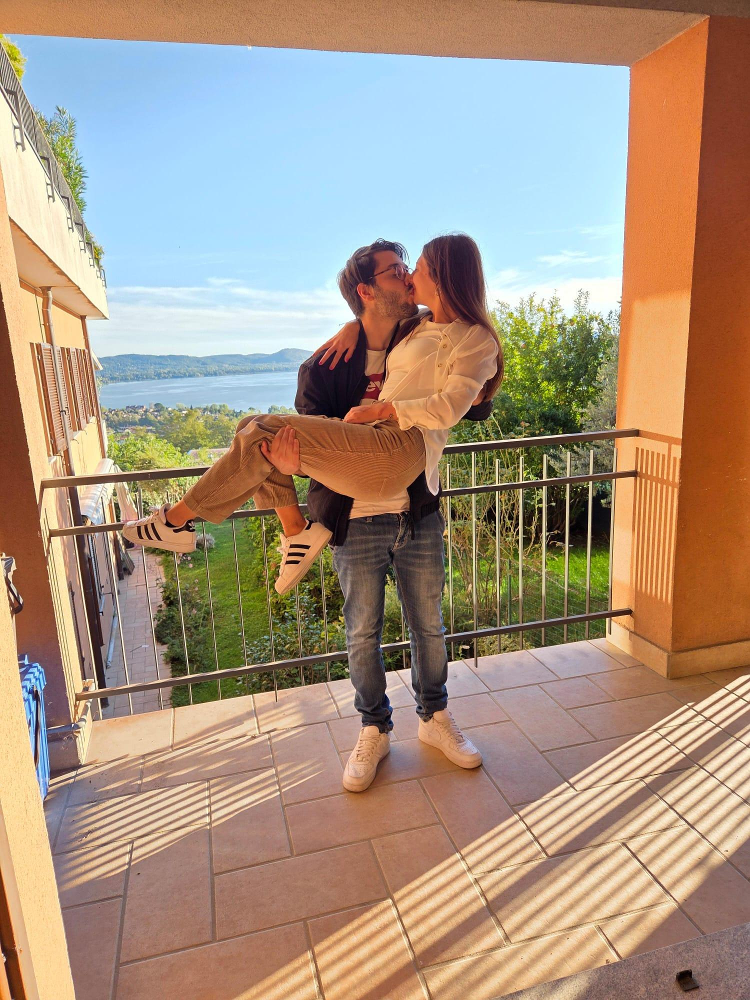
Il lago da casita 🏡
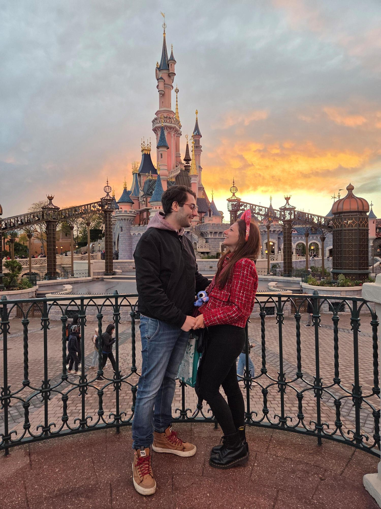
Disneyland Paris 🏰
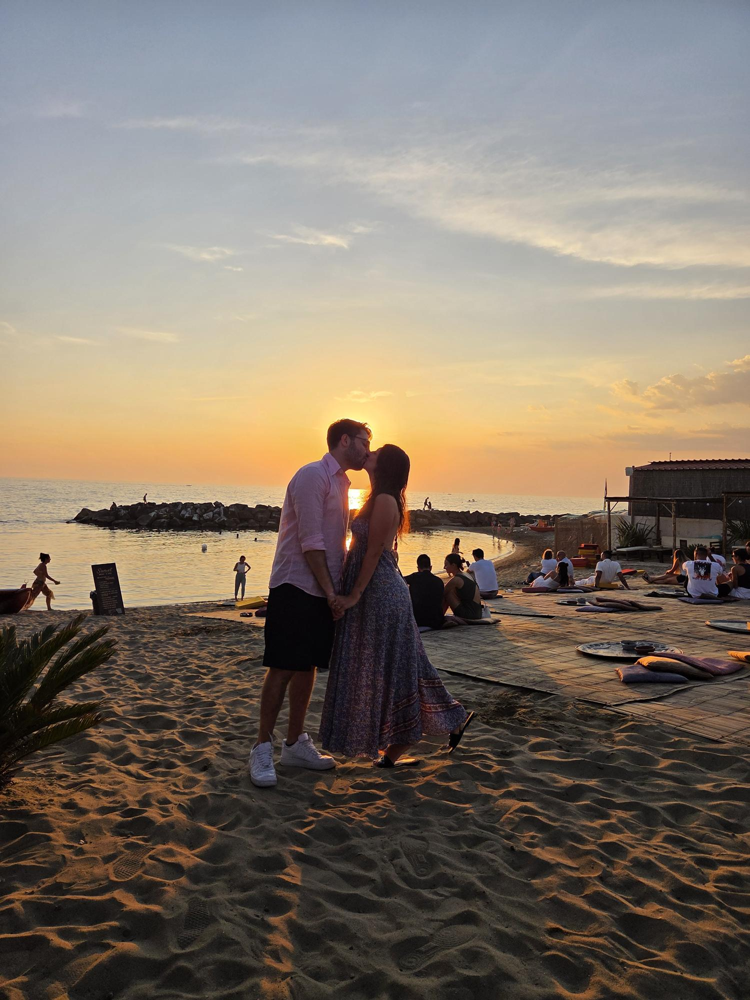
Il tramonto che sa di noi 🌅
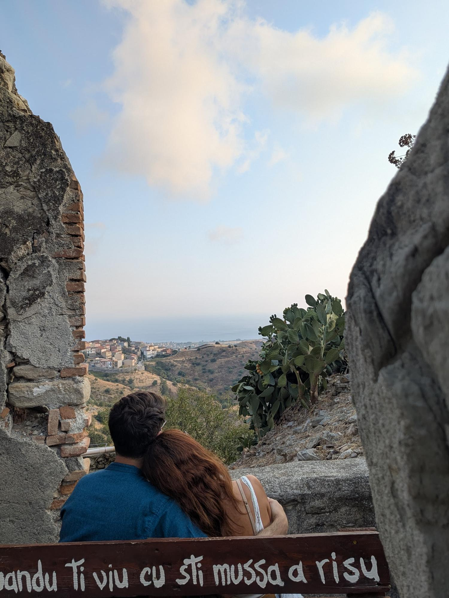
Mi veni na voglia mi ti baciu! 😘
Cerimonia · ore 14:30
Santuario di Santa Maria del Monte
Varese
Ricevimento
Villa Borghi · Varano Borghi, VA
🚌 La navetta collega solo lo stadio di Varese e la chiesa di Santa Maria del Monte, andata e ritorno.
🛏️ Chi lo desidera può prenotare il pernottamento a Villa Borghi.
?
Quanto ci conosci davvero?
12 domande su di noi. Scrivi il tuo nome e comincia — una sola possibilità a testa!
Scrivi nome e cognome per continuare
Invio le tue risposte…
Grazie per aver giocato! Il vincitore sarà svelato il giorno del matrimonio 💛
Risulta che questo nome abbia già risposto al quiz!
Se pensi sia un errore, scrivi il nome in modo leggermente diverso (es. aggiungi il cognome) o contatta gli sposi.
Ops, qualcosa è andato storto durante l'invio.
Controlla la connessione e riprova tra poco.
Il regalo più grande è avervi con noi.
Se avete piacere di farci un pensiero, il nostro conto è questo:
IBAN
per chi preferisse un bonifico
IT23L0311510801000000016050
Intestato a Antonio Triglia o Giulia Balsamo
Ci sarai?
confermaci la tua presenza
Scrivi il tuo nome e scegli un'opzione
Hai restrizioni alimentari?
Invio la tua conferma…
Risulta che questo nome abbia già confermato!
Se vuoi correggere qualcosa, contatta direttamente gli sposi.
Ops, qualcosa è andato storto durante l'invio.
Controlla la connessione e riprova tra poco.